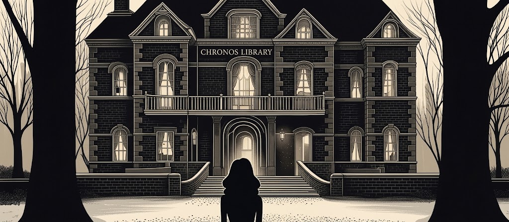

Once Upon a Page
Once Upon a Page

The Haunting of Hill House
Four people stay in a house that seems to be watching them.
Invitation to Hill House

Doctor John Montague is a Doctor of Philosophy in anthropology who secretly harbors a desire to study and analyze “supernatural manifestations,” yet fears besmirching his name and shattering his “air of respectability.” He has rented Hill House for three months, hoping to study the haunted place and finally legitimize the study of paranormal happenings. Inspired by “the methods of the intrepid nineteenth-century ghost hunters,” Montague plans to bring a group of psychically sensitive people to Hill House for a summer to provoke and observe whatever presence resides within the secluded manor. Having combed parapsychologists’ reports, “sensational newspapers,” and other records, he has assembled a list of people who meet his criteria, and mailed invitations to Hill House which explain the purpose of the retreat to this select group. Out of a dozen letters sent, Montague has received only four replies—out of those four, only two will ultimately show.
Eleanor Vance, one of the participants in the Hill House experiment, is thirty-two years old. She has been caretaker to her invalid mother for eleven years, nursing a hatred of the woman all the while. Now that her mother is dead, Eleanor lives with her brother-in-law, her sister Carrie, and their five-year-old daughter—all of whom she hates. Due to the isolated nature of her life, Eleanor is awkward and profoundly lonely. When she was twelve, “showers of stones” fell intermittently for three days on the home she and her sister shared with their mother. Though their mother claimed the stones were thrown by angry neighbors, the story became local lore and evidence of a poltergeist in the house—for this reason, Eleanor has wound up on Doctor Montague’s list.
Eleanor receives Montague’s invitation with glee—all her life, she has been waiting for something exciting to happen to her. She accepts the invitation and begins looking forward to the summer at Hill House, despite her sister and brother-in-law’s suggestions that Montague is a scammer or predator who is seeking out vulnerable young women like Eleanor so that he can “experiment” on them.
Theodora, a psychic who goes by her first name only, also accepts Doctor Montague’s invitation with excitement. She is renowned for her ability to identify nineteen out of twenty cards held up by an assistant out of sight and hearing. Theodora shares an apartment with a female friend, with whom she quarrels terribly shortly before departing for Hill House for reasons indefinable. Luke Sanderson is a liar and a thief, and the third person confirmed to visit Hill House for the summer. He is not a psychic subject, however—he is the man who stands to inherit the house once his aunt, its current owner, passes. Luke has been forced by the family lawyer to accompany Montague to the house for the summer to ensure that nothing goes wrong and no damage is done to the property.
Eleanor argues with her brother-in-law and Carrie about whether she can take the car she helped pay for, and which they all share, to Hill House for the summer. Eleanor’s sister worries that they’ll need it on their own summer vacation should their daughter Linnie fall ill. In spite of Eleanor’s protestations that the car is half hers, Carrie insists that due to the mysterious nature of Eleanor’s summer plans, she shouldn’t be allowed to take the car.
The next morning, however, Eleanor takes a taxi into the city, to the parking garage where the car is kept—she plans to steal it, knowing she has a right to take the vehicle for a few weeks. In her hurry to get to the parking garage undetected, she bumps into a little old lady on the street, spilling the woman’s groceries onto the sidewalk. Eleanor offers to pay the woman’s taxi fare home to make up for the blunder, and as the woman tucks herself into the taxi, she thanks Eleanor and tells her she’ll be “praying” for her.
Eleanor takes the car out of the garage and begins driving out of the city, thrilled to have “finally taken a step” in the direction of her own independence. As she leaves the city limits, she pulls out a letter from Doctor Montague which contains detailed directions to Hill House. The directions specify that anyone travelling to Hill House should not stop in the village at the foot of it, Hillsdale, as the people there are “openly hostile to anyone” who inquires about the mansion.
Eleanor, who has never driven far alone before in her life, is excited and thrilled to be out on the open road. She tries to savor each mile she travels and soak up every minute of her newfound independence. She considers abandoning her plans to go to Hill House and simply living a vagabond existence throughout the countryside, but is ultimately forced to admit that her curiosity about the house and Doctor Montague is driving her forward. As Eleanor passes a large and beautiful house with stone lions at the front, she descends into a deep fantasy in which the house belongs to her.
Eleanor stops for lunch after having driven just over a hundred miles. At a restaurant she sits near a family of four, and watches as a little girl, who has ordered milk, nearly throws a tantrum over not being able to drink out of a special cup she has at home—a cup with stars at the bottom, which she can look at as she drinks. Eleanor wishes she could urge the little girl not to settle for drinking out of a cup that isn’t special, because “once they have trapped [her] into being like everyone else,” everything will change.
As she arrives in crooked, dirty, gloomy Hillsdale, Eleanor instantly regrets her decision to stop and rest in the town against Montague’s advice. Nevertheless, she goes into a diner and orders coffee from a glum and “chinless” waitress. Eleanor sips coffee silently alongside a man whom Eleanor believes is making fun of her to the waitress using glances and gestures. Eleanor feigns ignorance about the town, asking its name and insisting she’s just passing through. As Eleanor enquires about how large the town is, what there is to do within it, and whether it gets many visitors, the man at the other end of the counter becomes upset. He stands swiftly, pays for his food, and says abruptly to Eleanor that people only leave Hillsdale—they never come to it. After the man leaves the diner, the waitress glumly agrees with him—“the lucky ones,” she says, leave Hillsdale forever.
Eleanor gets back in her car and starts on the rocky, unpaved road up to Hill House. She worries that the rutted road will damage the car—and, for the first time all day, wonders if her sister and brother-in-law have realized yet that she’s stolen the car. She laughs almost gleefully, happy to be far from home. As the road up to Hill House thickens with overgrowth, she becomes aware of the decreasing amount of sunlight, and as she comes around a curve and enters the clearing at the gate of Hill House, she is full of dread, and wonders why she has come after all.
The tall, heavy gate to the house is locked, chained, and barred. Eleanor presses the horn of her car, and soon a man appears on the other side of the gate. He peers through the bars and demands to know who Eleanor is and what she wants. She insists she’s been invited to Hill House by Doctor Montague, but the man at the gate taunts her, and refuses to let her in. He tells Eleanor that she’s the only one of Doctor Montague’s guests who’s shown up, but Eleanor insists that she wants to be admitted to the house anyway.
Before opening the gates, the caretaker states that he wants to make sure Eleanor knows what’s “waiting for [her] in there.” Eleanor feels a strange relief at being given one final chance to turn the car around and go home, away from the looming manor before her, but summons her courage and demands to be let in at once. The caretaker opens the gates for Eleanor, but as she drives the car through them, he approaches her window and warns her that she’ll soon be sorry she made him open the gate. The caretaker introduces himself as Dudley, and tells her that no one but he and his wife has stayed around Hill House—but even the two of them won’t stay on the property after dark.
Eleanor drives up to Hill House along the winding, twisting road, occasionally catching a glimpse through the trees of the house’s tall towers and spires. As she finally comes into full view of the house, she puts her foot on the brake and stares at the manse: it looks “vile” and “diseased,” and Eleanor longs to get away from the property “at once.”